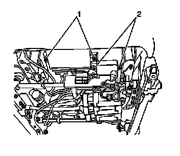

Seat Temperature Control Module: Service and Repair
Front Seat Heater Control Module Replacement
Removal Procedure
Caution: Refer to SIR Caution (SIR Caution) .

1. Remove the front seat cushion. Refer to Front Seat Cushion Replacement (Front Seat Cushion Replacement) .
2. Disconnect the electrical connector from the heated seat module.
3. Remove the heated seat module screws (2) and remove the module.
Installation Procedure
Notice: Refer to Fastener Notice (Fastener Notice) .
1. Install the heated seat control module and install the retaining screws (2).
Tighten the screws to 2 N.m (18 lb in).
2. Connect the electrical connector.
3. Install the seat cushion. Refer to Front Seat Cushion Replacement (Front Seat Cushion Replacement) .